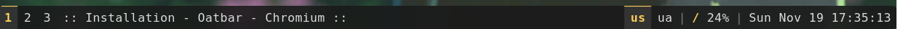
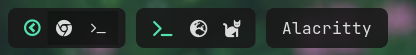
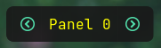
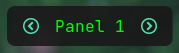
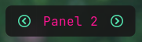

Oatbar


Oatbar a standalone desktop bar that can be used with various WMs and DEs focused
on customizability.


If you have experience with bars like i3bar, you are familiar with the protocols
through which bar plugins stream data to be displayed on the bar.
The usual format is text with some formatting capabilities. More complex widgets like progress bars, selections or images are usually limited to built-in modules. Other bars choose the opposite approach and function exsentialy as widget toolkits.
Oatbar combines the best of both worlds
- Embrace text formats popular in the ecosystem
- Represent custom data in various widgets without coding
- Provide plugins to support common tasks
Example:
[[bar]]
height=32
blocks_left=["workspace"]
blocks_right=["clock"]
[[command]]
name="clock"
command="date '+%a %b %e %H:%M:%S'"
interval=1
[[command]]
name="desktop"
command="oatbar-desktop"
[[block]]
name = 'workspace'
type = 'enum'
active = '${desktop:workspace.active}'
variants = '${desktop:workspace.variants}'
on_mouse_left = "oatbar-desktop $BLOCK_INDEX"
[[block]]
name = 'clock'
type = 'text'
value = '${clock:value}'
Here clock command sends plain text, but desktop streams
structured data in JSON. Both are connected to text and selector
widgets. desktop ships with oatbar, but it is an external tool
to the bar, as can be your script.
Next Steps
Installation
Please install cargo via the package manager or rustup.rs.
Dependencies
ArchLinux
pacman -Sy pango cairo libxcb pkgconf
Ubuntu/Debian
apt-get install -y build-essential pkg-config \
libcairo2-dev libpango1.0-dev libx11-xcb-dev
Other
Install the development packages for the following libraries
- Cairo
- Pango
- x11-xcb
Install
cargo install oatbar
During the first launch the bar will create a default config at
~/.config/oatbar.toml that should work on most machines. Run:
oatbar
And you should see:

NetBSD
On NetBSD, a package is available from the official repositories. To install it, simply run:
pkgin install oatbar
Next
Overview
The configuration for the oatbar is located at ~/.config/oatbar.toml. If you do
not have this file, it would be generated with reasonable defaults.
Proceed to concepts to learn basic building blocks
of oatbar configuration.
Proceed to cookbook if you are familiar with concepts and you are looking for a recipe to solve a particular problem, proceed to the particular problem.
The configuration is unstable.
Until 1.0 release, the configuration change is unstable and can change between minor releases. Community feedback is needed to make sure that when configuration stabilizes, it is the best possible.
Concepts
Command is a source of data that streams variables. Variables are used in properties of blocks. Bars are made of blocks. All you have to learn.
[[bar]]
blocks_right=["clock"]
[[block]]
name = 'clock'
type = 'text'
value = '${clock:value}'
[[command]]
name="clock"
command="date '+%a %b %e %H:%M:%S'"
The oatctl tool can be used to interact with oatbar. For more info:
oatctl help
Bar
Bar is a single panel that is positioned at the top or the bottom of a screen.
Here are all the properties it can have:
[[bar]]
# Blocks to show at different parts of the bar, can be empty.
# Currently it is user's responsibility is to make sure they don't overlap.
blocks_left=["block1", "block2"]
blocks_center=["block3"]
blocks_right=["block4"]
# Monitor to use as listed by `xrandr` command.
# If unspecified, the primary is used.
monitor="DP-6.8"
# Height of the bar.
height=32
# "bottom" is a default value.
position="top"
# Empty space between the blocks and the bar edges.
margin=5
# A bar is normally hidden, unless pops up.
popup=true
# Make a popup bar pop up when the mouse is near the edge of the screen.
popup_at_edge=true
# List of pairs [expression, regex].
# Show the block only if all expressions match respective regexes.
show_if_matches=[["${clock:value}",'.+']]
Command
Command is an external program that provides data to oatbar.
# Runs periodically
[[command]]
name="disk_free"
command="df -h / | tail -1 | awk '{print $5}'"
interval=60 # Default is 10.
# Runs once
[[command]]
name="uname"
command="uname -a"
once=true # Default is false.
# Streams continiously
[[command]]
name="desktop"
command="oatbar-desktop"
# format="i3bar"
oatbar will run each command as sh -c "command" to support basic shell
substitutions.
Formats
Formats are usually auto-detected and there is no need to set format explicitly.
plain
Plain text format is just text printed to stdout.
name="hello"
command="echo Hello world"
This will set ${hello:value} variable to be used
by blocks. If the command outputs multiple lines, each print
will set this variable to a new value. If the command runs indefinitely, the
pauses between prints can be used to only update the variable when necessary.
When the command is complete, it will be restarted after interval
seconds (the default is 10).
If line_names are set, then the output is expected in groups of
multiple lines, each will set it's own variable, like ${hello:first_name} and
${hello:last_name} in the following example:
name="hello"
line_names=["first_name", "last_name"]
Many polybar scripts can be
used via the plain format, as soon as they don't use polybar specific
formatting.
i3blocks raw format plugins
can be consumed too by means of the line_names set to standard names for
i3blocks.
i3bar
i3bar format is the richest supported format.
It supports multiple streams of data across multiple "instances" of these streams.
In i3wm this format fully controls the display of i3bar, where
for oatbar it is a yet another data source that needs to be explicitly
connected to properties of the blocks. For example instead of coloring
the block, you can choose to color the entire bar. Or you can use color red coming
from an i3bar plugin as a signal to show a hidden block.
Plugins that oatbar ships with use this format.
[[command]]
name="desktop"
command="oatbar-desktop"
The command output-desktop outputs:
{"version":1}
[
[{"full_text":"workspace: 1","name":"workspace","active":0,"value":"1","variants":"1,2,3"},
{"full_text":"window: Alacritty","name":"window_title","value":"Alacritty"}],
...
This command is named desktop in the config.
Each entry is groups variables under a different name that
represents a purpose of the data stream, in this case: workspace
and window_title. Multiple entries with the same name, but different
instance field to represent further breakdown (e.g. names of
network interfaces from a network plugin).
The output from above will set the following variables.
desktop:workspace.active=0
desktop:workspace.value=1
desktop:workspace.variants=1,2,3
desktop:workspace.full_text=workspace: 1
desktop:window_title.value=Alacritty
desktop:window_title.full_text=window: Alacritty
If instance is present in the entry, then the name of the variable is
command_name:name.instance.variable.
Block
Blocks are the widgets displaying pieces of information on the bar.
oatbar provides a lot of hidden power via these widgets, as they can provide
more than they initially seem. Consider that the most of the string properties
of blocks support variable substitution, directly controlled by your scripts.
The reference below explains properties of these blocks and the Cookbook shows how to use them in a very clever way.
Common properties
[[block]]
# Name used as a reference
name="block-name"
# Main input for the block.
value="<b>Clock:</b> ${clock:value}"
# A series of regex replacements that
# are applied to `value`.
# See https://docs.rs/regex/latest/regex/
replace=[
["^1$","www"],
["^2$","term"]
]
# If true, stop applying replaces after one row matches.
# If false, keep applying replaces to the end.
replace_first_match=false
# If set, formats the final value contents after all processing and transformations
# like regex replacements or progress bar rendering.
# Not supported by image blocks.
output_format="cpu: ${value}"
# If true (default), full Pango markup is supported.
# https://docs.gtk.org/Pango/pango_markup.html
# It may be desirable to turn it off if input has
# HTML-like text to be displayed.
pango_markup=true
# List of pairs [expression, regex].
# Show the block only if all expressions match respective regexes.
show_if_matches=[["${clock:value}",'.+']]
# If set, and the bar has popup=true, then this block
# can pop up.
# - block - the block itself pops up
# - partial_bar - the partial bar pops up
# - bar - the entire bar pops up.
# The surrounding separators will appear as appropriate.
popup="partial_bar"
# If unset, the popup is triggered by any property change.
# If set, the popup is triggered by change of this property.
popup_value="${clock:value}"
# Font and size of the text in the block.
font="Iosevka 14"
# Base RGBA colors of the blocks.
background="#101010bb"
foreground="#ffff00"
# Properties of lines around the block, if set.
overline_color="#..."
underline_color="#..."
edgeline_color="#..."
line_width=0.4
# Margin and padding of the block within a bar.
margin=3.0
padding=5.0
# A command to run on a particular mouse event.
# It is run with `sh -c "..."` and the process will be detached from oatbar.
# BLOCK_NAME and BLOCK_VALUE environment variables are set.
# For `enum` blocks, BLOCK_INDEX is set too.
on_mouse_left = 'chrome'
on_mouse_middle = 'chrome'
on_mouse_right = 'chrome'
on_scroll_up = 'chrome'
on_scroll_down = 'chrome'
To avoid repetition, consider using default_block, that
supports all common properties.
[[default_block]]
background="#202020"
Multiple named default_block sections can be used.
[[default_block]]
name="ws1_widgets"
[[block]]
inherit="ws1_widgets"
Text block
[[block]]
type="text"
Text blocks include all common properties, which should be enough to show basic text or icons using Pango markup, icon fonts such as Font Awesome, Nerd Fonts, IcoMoon or emojis.
In addition, text blocks are used as separators to create partial bars. They are smaller bars within a bar that groups multiple blocks together.

[[bar]]
blocks_right=["L", "music", "R", "E", "L", "layout", "S", "clock", "R"]
[[block]]
name="music"
...
show_if_matches = [['${player:now_playing.full_text}', '.+']]
popup = "partial_bar"
[[block]]
name="S"
type = "text"
separator_type = "gap"
value = "|"
[[block]]
name="E"
type = "text"
separator_type = "gap"
value = " "
background = "#00000000"
[[block]]
name="L"
type = "text"
separator_type = "left"
separator_radius = 8.0
[[block]]
name="R"
type = "text"
separator_type = "right"
separator_radius = 8.0
separator_type gives a hint on where partial bars are located.
This helps when popup="partial_bar". It also helps to collapse
unnecessary separators when normal blocks around them are hidden.
Number block
[[block]]
type="number"
Number can be displayed as text on the text block. But the real value comes when the bar understands that the data is a number.
In addition to common properties, the number blocks support unit conversions and alternative forms of display, such as progress bars.
# Min/max values are used in progress bars.
# They are set as string because they support
# variable substituion and can be specified in units.
min_value="0"
max_value="1000"
# A number type that input represents.
# - number - a number from min to max
# - percent - a number from 0 to 100, '%' is ommitted from the input when parsing.
# - bytes - a number that supports byte unit suffixes, e.g. "GB", "kb",
# - See https://docs.rs/bytesize/latest/bytesize/
number_type="percent"
# A sorted list of ramp formats. If set, prior to wrapping with `output_format`,
# wrap to the format from the entry larger than `value`.
ramp = [
["80%", "<span foreground='yellow'>${value}</span>"],
["90%", "<span foreground='red'>${value}</span>"],
]
number_display can be used to select the widget that is going to display your
number on the block.
Number as text
You can display the number as text as you would have with a text block, but there
is a benefit of additional functionality, such as unit conversions and ramp
functionality.
[[block]]
type="number"
name="cpu"
...
number_display="progress_bar"
Progress bar
[[block]]
type="number"
name="cpu"
...
number_display="progress_bar"
# How many characters to use for the progress bar.
progress_bar_size=10
# Progress bar characters. In this example would render: "━━━━雷 "
empty=" "
fill="━"
indicator="雷"
# Each of the above can be a ramp
# fill = [
# ["", "━"],
# ["60%", "<span foreground='yellow'>━</span>"],
# ["90%", "<span foreground='red'>━</span>"],
# ]
Enum block
[[block]]
type="enum"
Enum is different from text block as it renders multiple child text blocks called
variants, only one of which is active. Example: keyboard layout switch.
Almost every common property related to block display has an active_ counterpart
to configure an active block. For example background and active_background.
# A separated list of variants, e.g. "ua,se,us".
variants = '${keyboard:layout.variants}'
# An index of the item that is to be active starting from 0.
active = '${keyboard:layout.active}'
# A separator for the variants list. Default: ",".
enum_separator="|"
Text processing via replace is done per item of the variants separately,
not together. If an variant becomes empty as a result of processing, it will
not be displayed, but it won't impact the meaning of active index.
BLOCK_INDEX environment variable set for on_mouse_left command is set to
the index of the variant that was clicked on.
Image block
In image blocks, the value property is interpreted as and image file name to be
rendered.
No image manipluations are performed and the support is pretty basic. Consider
however that the value can come from a custom script that could select or render
an arbitrary image to a temporary directory, offering unlimited possibilities.
Request to the community: How do you think this feature can be improved? Let me know.
Varable
Variables are at length described in the Command section where they are produced and in the Block section where they are consumed.
Standalone variables
You can declare your additional variables that do not come from commands. This is useful to
pre-process data with replace and replace_first_match to be used in multiple blocks.
[[var]]
name="clock_color_attr"
value = '${clock:color}'
replace = [["(.+)","foreground='$1'"]]
[[block]]
value = "<span ${clock_color_attr}>${clock:value}</span>"
Standalone variables can use each other only in the order they are declared in the file, otherwise the result is undefined.
Filters
Filters are additional functions you can apply to values inside of the ${...} expressions. Example:
value = '${desktop:window_title.value|def:(no selected window)|max:100}'
Supported filters:
defsets the default value if the input variable is emptymaxlimits the length of the input. If it is larger, it is shortened with ellipsis (...)alignaligns the text to take fixed width if it is smaller- First character is the filler
- Second character is an alignment:
<,^(center) or> - Min width
- Example:
hellopassed viaalign: >10will behello
Cookbook
oatbar tries to keep pre-packaged plugins or modules to a minimum.
Instead it offers easy ways of achieving the same by integrating
external data sources, tools or modules from ecosystems of other bars.
Next
- Learn where to get data to show it on the bar.
- If you have the data, proceed learning how to display it.
- If you know the basic, see some advanced applications of
oatbarconcepts.
Data
This chapter contains examples of common sources and methods of ingesting data for your blocks.
Common Blocks
App Launcher
[[block]]
name='browser'
type = 'text'
value = "<span font='Font Awesome 6 Free 22'></span> "
on_mouse_left = 'chrome'
Clock
[[command]]
name="clock"
command="date '+%a %b %e %H:%M:%S'"
interval=1
[[block]]
name = 'clock'
type = 'text'
value = '${clock:value}'
If you do not need to show seconds, you can make interval smaller.
Keyboard
oatbar ships with keyboard status utility that streams keyboard layouts
and indicator values in i3bar format.
If you run it, you will see
❯ oatbar-keyboard
{"version":1}
[
[{"full_text":"layout: us","name":"layout","active":0,"value":"us","variants":"us,ua"},
{"full_text":"caps_lock:off","name":"indicator","instance":"caps_lock","value":"off"},
...],
Enable it with
[[command]]
name="keyboard"
command="oatbar-keyboard"
Layout
oatbar-keyboard is designed to work with setxkbmap.
For example you set up your layouts on each WM start like this:
setxkbmap -layout us,ua -option grp:alt_space_toggle
Enable oatbar-keyboard and use an enum block:
[[block]]
name = 'layout'
type = 'enum'
active = '${keyboard:layout.active}'
variants = '${keyboard:layout.variants}'
on_mouse_left = "oatbar-keyboard layout set $BLOCK_INDEX"
Indicators
Show indicators, such as caps_lock, scroll_lock and num_lock
as follows:
[[block]]
name = 'caps_lock'
type = 'text'
value = '${keyboard:indicator.caps_lock.full_text}'
Active workspaces and windows
oatbar-desktop talks to your WM via EWMH protocol to obtain
the information about active workspaces and windows.
❯ oatbar-desktop
{"version":1}
[
[{"full_text":"workspace: 1","name":"workspace","active":0,"value":"1","variants":"1,2,3"},
{"full_text":"window: Alacritty","name":"window_title","value":"Alacritty"}],
[[command]]
name="desktop"
command="oatbar-desktop"
[[block]]
name = 'workspace'
type = 'enum'
active = '${desktop:workspace.active}'
variants = '${desktop:workspace.variants}'
# Optional replacement with icons
replace = [
["1",""],
["2",""],
["3",""]
]
font="Font Awesome 6 Free 13"
on_mouse_left = "oatbar-desktop $BLOCK_INDEX"
[[block]]
name='window'
type = 'text'
value = '${desktop:window_title.value|max:100}'
pango_markup = false # Window title can happen to have HTML.
System stats
oatbar ships with a oatbar-stats utility that streams system stats in the i3bar
format:
- CPU
- Memory
- Network
- Interface names
- Running status
- Address
- Download and upload rates
There is a lot of data you can display on your blocks. Enable oatbar-stats
like this:
[[command]]
name="stats"
command="oatbar-stats"
Restart oatbar and examine the new variables.
oatctl var ls | grep '^stats:'
The example output below.
stats:cpu.full_text=cpu: 2%
stats:cpu.percent=2
stats:memory.free=8744980480
stats:memory.full_text=mem: 73% 32.9 GB
stats:memory.percent=73
stats:memory.total=32915705856
stats:memory.used=24170725376
stats:net.igc0.full_text=igc0: 192.168.0.160
stats:net.igc0.ipv4_0_addr=192.168.0.160
stats:net.igc0.ipv4_0_broadcast=192.168.0.255
stats:net.igc0.ipv4_0_run=true
stats:net.igc0.ipv4_0_up=true
stats:net.igc0.mac_0_addr=48:21:0b:35:ca:08
stats:net.igc0.mac_0_run=true
stats:net.igc0.mac_0_up=true
stats:net.igc0.rx_per_sec=1704
stats:net.igc0.tx_per_sec=1110
...
Entries with full_text are a good start to display directly,
if you do not need more fine grained customizations.
[[block]]
name="ethernet"
type="text"
value="${stats:net.igc0.full_text}"
Disk space
Example for /home directory partition:
[[command]]
name="home_free"
command="df -h /home | tail -1 | awk '{print $5}'"
interval=60
[[block]]
name='home_free'
type = 'text'
value = '<b>/home</b> ${home_free:value}'
Third-party sources
Existing bar ecosystems already can provide large mount of useful information.
oatbar by-design focuses on making it possible to adapt third-party data sources.
i3status
i3status is a great cross-platform source of information about the system. It supports:
- CPU
- Memory
- Network
- Battery
- Volume
i3status is designed to be used by i3bar, but oatbar supports this format natively.
Enable it in ~/.i3status.conf or in ~/.config/i3status/config:
general {
output_format = "i3bar"
}
Add you plugin as described in the i3status documentation.
Prefer simple output format, as you can format it on the oatbar side. Example:
order += cpu_usage
cpu_usage {
format = "%usage"
}
If you run i3status you will now see
❯ i3status
{"version":1}
[
[{"name":"cpu_usage","markup":"none","full_text":"00%"}]
,[{"name":"cpu_usage","markup":"none","full_text":"02%"}]
In oatbar config:
[[block]]
name='cpu'
type = 'number'
value = "${i3status:cpu_usage.full_text}"
number_type = "percent"
output_format="<b>CPU:</b>${value}"
number_display="text"
If you prefer a progress bar:
number_display="progress_bar"
conky
As i3status, conky can also be a great source of system data.
conky can print it's variables as plain text
and oatbar can consume it as multi-line plain text. Example ~/.oatconkyrc:
conky.config = {
out_to_console = true,
out_to_x = false,
update_interval = 1.0,
}
conky.text = [[
$memperc%
$cpu%
]]
If you run conky -c ~/.oatconkyrc you will see repeating groups of numbers:
2%
10%
5%
10%
In oatbar config:
[[command]]
name="conky"
command="conky -c ~/.oatconkyrc"
line_names=["mem","cpu"]
[[block]]
name='cpu'
type = 'number'
value = "${conky:cpu}"
number_type = "percent"
[block.number_display]
type="text"
output_format="<b>CPU:</b>${value}"
[[block]]
name='mem'
type = 'number'
value = "${conky:mem}"
number_type = "percent"
[block.number_display]
type="text"
output_format="<b>MEM:</b>${value}"
i3blocks
i3blocks in a drop-in replacement for i3status to be used in
i3bar. If you have existingi i3blocks configs, feel free to plug it
directly into oatbar:
[[command]]
name="i3blocks"
command="i3blocks"
You can check which oatbar variables it makes available by running
i3blocks in your console.
The indirection between the script, i3blocks and oatbar is not required.
You can connect any plugin from the i3block-contrib
excellent collection directly into oatbar.
For example:
$ git clone https://github.com/vivien/i3blocks-contrib
$ cd ./i3blocks-contrib/cpu_usage2
$ make
$ ./cpu_usage2 -l "cpu: "
cpu: <span> 39.79%</span>
cpu: <span> 47.06%</span>
As you can see, it inputs only one line of data each interval,
so setting line_names is not necessary, however always check for it.
[[command]]
name="cpu_usage2"
command="/path/to/cpu_usage2 -l 'cpu: '"
[[block]]
name="cpu_usage2"
type="text"
value="${cpu_usage2:value}"
HTTP APIs
HTTP JSON APIs that do not require complicated login are extremely
easy to integrate using curl and jq.
Explore your JSON first
$ curl 'https://api.ipify.org?format=json'
{"ip":"1.2.3.4"}
jq -r let's you extract a value from a JSON object. Add the command
to oatbar config, but make sure to set a sufficient interval not to get
banned.
[[command]]
name="ip"
command="curl 'https://api.ipify.org?format=json | jq -r .ip"
interval=1800
[[block]]
name="ip"
type="text"
value="my ip: ${ip:value}"
File
You can use file watching utils to output file contents on any file change.
For example for Linux you can use fswatch.
[[command]]
command="cat ./file; fswatch --event Updated ./file | xargs -I {} cat {}"
Socket
Use socat to read from sockets. TCP socket:
[[command]]
command="socat TCP:localhost:7777 -"
SSL socket:
[[command]]
command="socat OPENSSL:localhost:7777 -"
For Unix socket:
[[command]]
command="socat UNIX-CONNECT:/path/to/socket -"
Appearance
This section focuses on recipes on how to display the data from your sources.
Separators
Simple separator

Separator is just a text block.
[[bar]]
blocks_left=["foo", "S", "bar", "S", "baz"]
[[block]]
name="S"
type = 'text'
separator_type = 'gap'
value = '|'
foreground = "#53e2ae"
This approach offers maximum flexibility:
- Multiple separator types and styles
- Dynamically separators based on conditions
- Disappearing separators via
show_if_matches
Specifying separator_type = "gap" is recommended. It gives oatbar a hint that the block is
a separator. For example multiple separators in a row do not make sense and
they will collapse if real blocks between them become hidden.
Empty space around bar
By default oatbar looks more traditional.

You can apply margins and border-lines to achieve some empty space around your bar.

[[bar]]
blocks_right=["L", "layout", "S", "clock", "R"]
# `top` may need a value or must be zero depening on your WM.
margin={left=8, right=8, top=0, bottom=8}
# Alpha channels is zero, so the bar is transparent unless there is has a block.
background="#00000000"
[[default_block]]
# The actual block color.
background="#191919e6"
[[block]]
name='L'
type = 'text'
separator_type = 'left'
separator_radius = 8.0
[[block]]
name='R'
type = 'text'
separator_type = 'right'
separator_radius = 8.0
Border lines

# Or per [[block]] separately.
[[default_block]]
edgeline_color = "#53e2ae"
overline_color = "#53e2ae"
underline_color = "#53e2ae"
# edgeline applies to `left` and `right` blocks.
[[block]]
name='L'
type = 'text'
separator_type = 'left'
separator_radius = 8.0
[[block]]
name='R'
type = 'text'
separator_type = 'right'
separator_radius = 8.0
Partial bar
Bars of oatbar can be further separated to small partial bars. It is possible
to by further use of L and R bars and addition of completely transparent E block.

[[bar]]
blocks_left=["L", "workspace", "R", "E", "L", "active_window", "R"]
[[block]]
name="E"
type = 'text'
separator_type = 'gap'
value = ' '
background = "#00000000"
# If you have set these in [[default_block]], reset them back.
edgeline_color = ""
overline_color = ""
underline_color = ""
Setting separator_type correctly for all separators will make partial panel
disappearing if all real blocks are hidden via show_if_matches.
Blocks
Pango markup
oatbar supports full Pango Markup
as a main tool to format the block content. Command can emit Pango markup too, controlling
the appearance of the blocks.

[[block]]
name='pango'
type = 'text'
value = "<span text_transform='capitalize' color='yellow'>h<i>ell</i>o</span> <span color='lawngreen'>World</span>"
Font names to be used in Pango can be looked up via the fc-list command.
Icons
Use icon fonts such as Font Awesome, Nerd Fonts, IcoMoon or emojis.

[[block]]
name='pango'
type = 'text'
value = "<span ${green_icon}></span> Symbolico - I'm free"
[[var]]
name="green_icon"
value="font='Font Awesome 6 Free 13' foreground='#53e2ae'"
Some icon fonts use ligatures instead of emojis, replacing words with icons like this:
value = "<span ${green_icon}>music</span> Symbolico - I'm free"
If your icon does not perfectly vertically align with your text, experiment with font size and rise Pango parameter.
Visibility
show_if_matches combined with a powerful tool to build dynamic bars.
Here it is used to only show the block if the value is not empty.
[block]
value = '${desktop:window_title.value}'
show_if_matches = [['${desktop:window_title.value}', '.+']]
Custom variables, not only those coming from commands can be used. They can be
set via oatctl var set, opening a huge number of possibilities. See some examples in
the Advanced chapter.
If you are not an expert in regular expressions, here are some useful ones:
| Regex | Meaning |
|---|---|
foo | Contains foo |
^foo | Starts with foo |
foo$ | Ends with foo |
^foo$ | Exactly foo |
^$ | Empty string |
.+ | Non empty string |
(foo|bar|baz) | Contains one of those words |
^(foo|bar|baz)$ | Exactly one of those words |
In the examples above foo works because it only contains alpha-numeric characters,
but be careful with including characters that have special meaning in regular expressions.
For more info read regex crate documentation.
Popup bars
A bar can be hidden and appear when certain conditions are met.
[[bar]]
popup=true
Popup bars appear on the top of the windows, unlike normal bars that allocate dedicated space on the screen.

Popup at cursor
Popup bar can be shown when the cursor approaches the screen edge where the bar is located.
[[bar]]
popup=true
popup_at_edge=true
Temporary popup on block change
When any property of the block changes you can make it appear. Depending on a popup
value you can show enclosing partial or entire bar.
[[bar]]
popup="bar"
#popup="partial_bar"
#popup="block"
If you won't want to popup on any property change, you can limit it to one expression.
[[bar]]
popup_value="${foo}"
Example layout switcher that appears in the middle of the screen when you change your layout.
[[bar]]
blocks_center=["L", "layout_enum_center", "R"]
background="#00000000"
popup=true
position="center"
[[block]]
name = 'layout_enum_center'
type = 'enum'
active = '${keyboard:layout.active}'
variants = '${keyboard:layout.variants}'
popup = "block"
Advanced examples
Let's build something complex with what oatbar has to offer.
Combination of variables, visibility control and programmatic access to variables via oatctl var provides
tremendous power.
In these examples oatctl var is often called from on_mouse_left handlers, but you
can use it in your WM keybindings too.
Workspace customizations
If you have enabled oatbar-desktop command, you should have access to the ${desktop:workspace.value}
variable.
[[command]]
name="desktop"
command="oatbar-desktop"
See which values it can have via oatctl var ls | grep desktop when running oatbar. You can use
this to set any properties of your block, including appearance and visibility.
Appearance
In this example, the bar on workspace two is a bit more red than usual.
[[var]]
name="default_block_bg"
value="${desktop:workspace.value}"
replace_first_match=true
replace=[
["^two$","#301919e6"],
[".*", "#191919e6"],
]
[[default_block]]
background="${default_block_bg}"
Visibility
This block shown only on workspace three.
[[block]]
show_if_matches=[["${desktop:workspace.value}", "^three$"]]
Menu
oatbar does not know anything about menus, but let's build one.

[[bar]]
blocks_left=["L", "menu", "launch_chrome", "launch_terminal", "R"]
[[default_block]]
background="#191919e6"
[[default_block]]
name="menu_child"
background="#111111e6"
line_width=3
overline_color="#191919e6"
underline_color="#191919e6"
show_if_matches=[["${show_menu}","show"]]
[[block]]
name='menu'
type = 'text'
value = "${show_menu}"
replace = [
["^$", "circle-right"],
["show", "circle-left"],
["(.+)","<span font='IcoMoon-Free 12' weight='bold' color='#53e2ae'>$1</span>"],
]
on_mouse_left = "oatctl var rotate show_menu right '' show"
[[block]]
name='launch_chrome'
type = 'text'
inherit="menu_child"
value = "<span font='IcoMoon-Free 12'></span> "
on_mouse_left = "oatctl var set show_menu ''; chrome"
[[block]]
name='launch_terminal'
type = 'text'
inherit="menu_child"
value = "<span font='IcoMoon-Free 12'></span> "
on_mouse_left = "oatctl var set show_menu ''; alacritty"
Let's take a closer look:
- We create a
show_menuvariable that can be empty or set toshow - In
menublock all regexes apply in sequence. - The first two replace it with icon names.
- The last one wraps the icon name into the final Pango markup.
- The
on_mouse_leftrotates the values ofshow_menubetween empty andshow, effectively toggling it. - Blocks are only displayed if
show_menuis set. - Blocks clear
show_menubefore launching the app to hide the menu. - A small cosmetic effect is achieved by inheriting a
default_blockwith a different style.
This example can be extended to build more layers of nesting by introducing additional variables.
Rotating menu
It sometimes useful to always show the main panel, but have an occasional access to additional information. A great idea would be to build a rotating menu.



[[bar]]
blocks_left=["L", "rotate_left", "panel_0", "panel_1", "panel_2", "rotate_right", "R"]
[[block]]
name='rotate_left'
type = 'text'
value = "<span font='IcoMoon-Free 12' color='#53e2ae'>circle-left</span>"
on_mouse_left = "oatctl var rotate rotation_idx left '' 1 2"
[[block]]
name='rotate_right'
type = 'text'
value = "<span font='IcoMoon-Free 12' color='#53e2ae'>circle-right</span>"
on_mouse_left = "oatctl var rotate rotation_idx right '' 1 2"
[[block]]
name='panel_0'
type = 'text'
value = "<span color='yellow'>Panel 0</span>"
show_if_matches=[["${rotation_idx}", "^$"]]
[[block]]
name='panel_1'
type = 'text'
value = "<span color='lime'>Panel 1</span>"
show_if_matches=[["${rotation_idx}", "1"]]
[[block]]
name='panel_2'
type = 'text'
value = "<span color='deeppink'>Panel 2</span>"
show_if_matches=[["${rotation_idx}", "2"]]